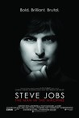
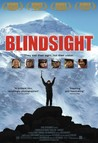
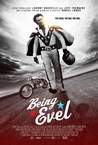
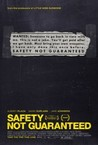
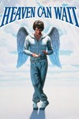
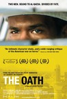

Movie Releases By Score
|  |
2701.
Steve Jobs: Man in the Machine
Release Date:
September 4, 2015
In his signature black turtleneck and blue jeans, shrouded in shadows below a milky apple, Steve Jobs’ image was ubiquitous. But who was the man on the stage? What accounted for the grief of so many across the world when he died? Steve Jobs: The Man In The Machine is a critical examination of Jobs who was at once revered as an iconoclastic genius and a barbed-tongued tyrant. A candid look at Jobs' legacy featuring interviews with a handful of those close to him at different stages in his life, the film is evocative and nuanced in capturing the essence of the Apple legend and his values which shape the culture of Silicon Valley to this day. [Magnolia Pictures]
|
2702.
Aliyah
Release Date:
June 14, 2013
Alex, 27, lives in a working-class Paris neighborhood and sells drugs for a living, continuously paying off the debts of his brother Isaac (played by French auteur Cedric Kahn), who's becoming a real burden. When his cousin, who has just returned from completing his military service in Israel, tells him he's opening a restaurant in Tel Aviv, Alex thinks that joining him might be the life-changing opportunity he was waiting for. But in order to leave, Alex must quickly find enough money and accomplish his "aliyah" (the term for Jews emigrating to Israel) which involves, among other things, Hebrew lessons and connecting with his Jewish roots. He also has to leave behind his beloved city of Paris, his former lover Esther, his lifelong friend Mathias, and Jeanne, a woman whom he's just met but has the potential of becoming someone important in his life. Torn between making his aliyah, his drug selling, his complicated love life and a destructive brother, Alex will have to find his own way and make a final decision. [Film Movement]
|
|
2703.
Strike
Release Date:
June 15, 2007
Strike is based on the true story of a remarkable and little known figure who was integral in beginning the Solidarity movement and setting Poland on the course to democracy. It is a touching tribute to a true overlooked hero, a woman who undergoes an important awakening – the realization of an ordinary person who simply looks around her and distinguishes right from wrong. (Laemmle/Zeller Films)
|
|

|
2704.
Princess Cyd
Release Date:
November 3, 2017
16-year-old Cyd (Jessie Pinnick) decides to take a break from her depressive single father and spend a summer in Chicago with her aunt Miranda (Rebecca Spence), a well-known novelist. Soon after her arrival, Cyd encounters Katie (Malic White), a young barista. The two make plans to meet up after Katie’s shift and a new, charged relationship begins. The Chicago landscape expands, and we navigate intimate and fragile moments between Cyd and Katie as they explore their new attraction. Miranda functions as a counterpart to young Cyd’s new explorations of sexuality and love, and as the summer continues they develop a strong relationship founded on a shared openness and healthy criticism of particular personal moments.
|
2705.
Big Fish & Begonia
Release Date:
April 6, 2018

It is a world within our world, yet unseen by any human, and the beings here control time and tide and the changing of the seasons. On the day Chun turns sixteen, she is transformed into a dolphin to explore the human world. She is rescued from a vortex by a human boy at the cost of his own life. Chun is so moved by the boy's kindness and courage that she decides to give him life again. But to do this, she must protect the boy's soul, a tiny fish, and nurture it to grow. Through adventure and sacrifice, love grows, yet now she must release him back to the sea, back to life in the human world.
|
|

|
2706.
Bone Tomahawk
Release Date:
October 23, 2015
When a group of cannibal savages kidnaps settlers from the small town of Bright Hope, an unlikely team of gunslingers, led by Sheriff Franklin Hunt (Kurt Russell), sets out to bring them home. But their enemy is more ruthless than anyone could have imagined, putting their mission – and survival itself – in serious jeopardy. [RLJ Entertainment]
|

|
2707.
All That Jazz
Release Date:
December 20, 1979

Director/choreographer Bob Fosse tells his own life story as he details the sordid life of Joe Gideon (Roy Scheider), a womanizing, drug-using dancer.
|

|
2708.
Risk
Release Date:
May 5, 2017
Laura Poitras, Academy Award winning director of Citizenfour, returns with her most personal and intimate film to date. Filmed over six years, Risk is a complex and volatile character study that collides with a high stakes election year and its controversial aftermath. Cornered in a tiny building for half a decade, Julian Assange is undeterred even as the legal jeopardy he faces threatens to undermine the organization he leads and fracture the movement he inspired. Capturing this story with unprecedented access, Poitras finds herself caught between the motives and contradictions of Assange and his inner circle. In a new world order where a single keystroke can alter history, Risk is a portrait of power, betrayal, truth, and sacrifice.
|

|
2709.
Sunset Song
Release Date:
May 13, 2016
Set in a rural Scottish community during the early years of the twentieth century, Sunset Song is driven by the young heroine Chris and her intense passion for life, for the unsettling Ewan and for the unforgiving land. The First World War reaches out from afar, bringing the modern world to bear on the community in the harshest possible way, yet in a final moment of grace, Chris endures, now a woman of remarkable strength who is able to draw from the ancient land in looking to the future. [Magnolia Pictures]
|
2710.
Farewell, Herr Schwarz
Release Date:
January 9, 2015
Siblings Michla and Feiv'ke Schwarz survived the Holocaust but never reunited after the war. Michla moved to the soon-to-be-founded Jewish state in the Middle East and started a family there. Her brother Feiv'ke, presumed dead, returned to East Germany, married a German woman and inexplicably lived amidst the concentration camp ruins where he was once a prisoner. The Israeli and German sides to the family lived unaware of each other for half a century until first time filmmaker Yael Reuveny probed exactly what happened to her family in 1945. [Kino Lorber]
|
|

|
2711.
Joshua: Teenager vs. Superpower
Release Date:
May 26, 2017
Unstable times can create the unlikeliest of heroes. When the promise of Hong Kong’s autonomy was at risk, 14 year old Joshua Wong decided to speak up. Amid the glistening cityscape, filmmaker Joe Piscatella introduces viewers to a teenaged activist who inspired tens of thousands to stand up for their beliefs.
|

|
2712.
Zipper: Coney Island's Last Wild Ride
Release Date:
August 9, 2013
A film about greed, politics, land use and public policy, Zipper tells the story behind the battle over an American cultural icon. Small-time ride operator, Eddie Miranda, proudly runs a 38-year-old carnival contraption called the Zipper in the heart of Coney Island’s gritty amusement district. When his rented lot is snatched up by an opportunistic real estate mogul, Eddie and his ride become casualties of a power struggle between the developer and the City of New York. Be it an affront to history or just the path of progress, the spirit of Coney Island is at stake. In a market-driven world where growth often trumps preservation, the Zipper may be only the beginning of what is lost.
|

|
2713.
Phantasm
Release Date:
June 1, 1979
A teenage boy and his friends face off against a mysterious grave robber known only as the Tall Man, who keeps a mysterious arsenal of terrible weapons with him.
|

|
2714.
7 Boxes
Release Date:
February 7, 2014
It's Friday night in Asunción, Paraguay. Víctor, a 17-year-old wheelbarrow delivery boy, dreams of becoming famous and covets a fancy cellular phone in the infamous Mercado 4. He's offered a chance to deliver seven boxes with unknown contents in exchange for a $100 bill. But what sounds like an easy job soon gets complicated. Something in the boxes is highly coveted and Víctor and his pursuers quickly find themselves caught up in a crime they know nothing about.
|

|
2715.
Exhibition
Release Date:
June 20, 2014
When D (Viv Albertine) and H (Liam Gillick) decide to sell the home they have loved and lived in for two decades, they begin a process of saying goodbye to their shared history under the same roof. The upheaval causes anxieties to surface, and wife and performance artist D struggles to control the personal and creative aspects of her life with H. Dreams, memories, and fears have all imprinted themselves on their home, which exists as a container for their lives and has played such an important role in their relationship. [Kino Lorber]
|
2716.
Train to Busan
Release Date:
July 22, 2016
Train to Busan is a harrowing zombie horror-thriller that follows a group of terrified passengers fighting their way through a countrywide viral outbreak while trapped on a suspicion-filled, blood-drenched bullet train ride to Busan, a southern resort city that has managed to hold off the zombie hordes… or so everyone hopes.
|
|

|
2717.
Superman Returns
Release Date:
June 28, 2006
Five years after his mysterious disappearance, Superman returns to Metropolis -- but things have changed in his absence.
|

|
2718.
Long Shot
Release Date:
May 3, 2019
When Fred Flarsky (Seth Rogen) reunites with his first crush, one of the most influential women in the world, Charlotte Field (Charlize Theron), he charms her with his self-deprecating humor and his memories of her youthful idealism. As she prepares to make a run for the Presidency, Charlotte hires Fred as her speechwriter. A fish out of water on Charlotte's elite team, Fred is unprepared for her glamourous lifestyle in the limelight. Sparks fly as their unmistakable chemistry leads to a round-the-world romance and a series of unexpected and dangerous incidents.
|

|
2719.
Good Hair
Release Date:
October 9, 2009
An exposé of comic proportions that only Chris Rock could pull off, Good Hair visits beauty salons and hairstyling battles, scientific laboratories and Indian temples to explore how hairstyles impact the activities, pocketbooks and self-esteem of the black community. (Roadside Attractions)
|
|  |
2720.
Blindsight
Release Date:
March 5, 2008

A dangerous journey soon becomes a seemingly impossible challenge made all the more
remarkable by the fact that the teenagers are blind. Believed by many Tibetans to be possessed by demons, the children are shunned by their parents, scorned by their villages, and rejected by society. Rescued by Sabriye Tenberken, a blind educator and adventurer who established the first school for the blind in Lhasa, the students invite the famous blind mountain climber Erik Weihenmayer to visit their school after learning about his conquest of Everest. Erik arrives in Lhasa and inspires Sabriye and her students Kyila, Sonam Bhumtso, Tashi, Gyenshen, Dachung, and Tenzin to let him lead them higher than they have ever been before. The resulting three-week journey is beyond anything any of them could have predicted. (Robson Entertainment)
|

|
2721.
Woman on the Beach
Release Date:
January 9, 2008
Joong Rae goes on a road trip to the west coast with his friend Chang Wook and Chang Wook's girlfriend Moon Suk. In the beautiful beach setting of Shinduri, Joong Rae and Moon Suk find themselves attracted to each other and spend a passionate night together. But where does life go the morning after? (TigerCinema)
|
|
|
2722.
Czech Dream
Release Date:
June 15, 2007
A mockmentary about a Czech mega-store.
|
|
|
2723.
Tibet: A Buddhist Trilogy
Release Date:
March 31, 2006
Originally presented during the Dalai Lama's first visit to the US in 1979, this is an epic documentary of spirituality in exile.
|

|
2724.
Pi
Release Date:
July 10, 1998
Max Cohen, a mathematician and computer genius, finds himself pursued by Wall Street traders and a Hasidic cabal in this award-winning film.
|

|
2725.
Dances with Wolves
Release Date:
November 9, 1990
Rewarded for his heroism in the Civil War, Lt. Dunbar (Costner) wants to see the American frontier before it is gone. He is assigned to an adandoned fort, where a sioux tribe is his only neighbor. Overcoming the language barrier and their mutual fear and distrust, Dunbar and the proud Indians gradually become friends. Eventually, he falls in love with the beautiful Stands With a Fist (McDonnell), a white woman raised by the tribe. (MGM)
|

|
2726.
Presumed Innocent
Release Date:
July 27, 1990
As a lawyer investigates the murder of a colleague, he finds himself more connected to the crime than anyone else.
|
2727.
Wreck-It Ralph
Release Date:
November 2, 2012
Ralph is tired of being overshadowed by Fix-It Felix, the "good guy" star of their game who always gets to save the day. But after decades doing the same thing and seeing all the glory go to Felix, Ralph decides he's tired of playing the role of a bad guy. He takes matters into his own massive hands and sets off on a game-hopping journey across the arcade through every generation of video games to prove he's got what it takes to be a hero. On his quest, he meets the tough-as-nails Sergeant Calhoun from the first-person action game Hero’s Duty. But it’s the feisty misfit Vanellope von Schweetz from the candy-coated cart racing game, Sugar Rush, whose world is threatened when Ralph accidentally unleashes a deadly enemy that threatens the entire arcade. Will Ralph realize his dream and save the day before it’s too late? (Walt Disney Pictures)
|
|

|
2728.
Heavy Trip
Release Date:
October 5, 2018
Turo is stuck in a small village where the best thing in his life is being the lead vocalist for the amateur metal band Impaled Rektum. The only problem? He and his bandmates have practiced for 12 years without playing a single gig. The guys get a surprise visitor from Norway—the promoter for a huge heavy metal music festival—and decide it’s now or never. They steal a van, a corpse, and even a new drummer in order to make their dreams a reality.
|

|
2729.
First They Killed My Father
Release Date:
September 15, 2017
First They Killed My Father is the adaptation of Cambodian author and human rights activist Loung Ung’s gripping memoir of surviving the deadly Khmer Rouge regime from 1975 to 1978. The story is told through her eyes, from the age of five, when the Khmer Rouge came to power, to nine years old. The film depicts the indomitable spirit & devotion of Loung and her family as they struggle to stay together during the Khmer Rouge years.
|

|
2730.
The Birdcage
Release Date:
March 8, 1996
Mike Nichols remakes "La Cage Aux Folles." The comedy features a flamboyant gay couple (Williams and Lane) who attempt to "play it straight" for their son's prospective in-laws.
|

|
2731.
ParaNorman
Release Date:
August 17, 2012
In ParaNorman, a small town comes under siege by zombies. Who can it call? Only misunderstood local boy Norman, who is able to speak with the dead. In addition to the zombies, he’ll have to take on ghosts, witches and, worst, of all, grown-ups, to save his town from a centuries-old curse. But this young ghoul whisperer may find his paranormal activities pushed to their otherworldly limits. (Focus Features)
|

|
2732.
Let It Rain
Release Date:
June 18, 2010
Agathe Villanova is a self-centered, workaholic feminist politician who, upon reluctantly returning to her home in the south of France to sort out her mother’s affairs, runs for an local election. Upon her arrival, Agathe grudgingly agrees to take part in a documentary being made by the blundering duo of Karim an aspiring filmmaker, and self-professed "reporter" Michel, on the subject of “successful women." As Agathe's life hilariously unravels, the camera is there to capture it all. (IFC Film)
|

|
2733.
Screwball
Release Date:
March 29, 2019
Recounting the high-profile doping scandal that rocked Major League Baseball, director Billy Corben (Cocaine Cowboys) takes us into the surreal Miami underworld that provided performance-enhancing drugs to Alex Rodriguez, Manny Ramirez and other star players.
They say South Florida is a sunny place for shady people and this is certainly true of steroid peddler Anthony Bosch and his most notorious client, Alex Rodriguez of the New York Yankees. While Bosch's medical credentials may be lacking, his storytelling skills are first rate as he hilariously details the rise and fall of his “health clinic”, including mob connections, financial chicanery, his cocaine habit, and Rodriguez's eccentric behavior.
The documentary plays like a madcap Floridian crime comedy in the vein of Elmore Leonard or the Coen Brothers while it raises serious questions about the ethics of professional sports. Powerful interests would be happy to let this story slip from memory, but Screwball makes it unforgettable. [Greenwich Entertainment]
|

|
2734.
The Rocket
Release Date:
January 10, 2014
A boy who is believed to bring bad luck to everyone around him leads his family and two new friends through Laos to find a new home. After a calamity-filled journey through a land scarred by the legacy of war, to prove he's not bad luck he builds a giant rocket to enter the most exciting and dangerous competition of the year: the Rocket Festival.
|

|
2735.
The Wolf Man
Release Date:
December 12, 1941
A practical man returns to his homeland, is attacked by a creature of folklore, and infected with a horrific disease his disciplined mind tells him can not possibly exist.
|
|  |
2736.
Being Evel
Release Date:
August 21, 2015
A generation of Americans grew up worshipping self-styled hero Evel Knievel – watching him every Saturday on Wide World of Sports and buying his Ideal toys. For producer/subject Johnny Knoxville and so many others, he was the ultimate antidote to the disenchantment of the 70′s. But few knew the incredible and often complex aspects of his epic life, which, like his jumps, was sometimes glorious and sometimes disastrous. With an entire genre of sports ascending from his daring inventiveness, now is the time to look at this extreme man and his complicated legacy. [Gravitas Ventures]
|
2737.
The Internet's Own Boy: The Story of Aaron Swartz
Release Date:
June 27, 2014
The story of programming prodigy and information activist Aaron Swartz. From Swartz's help in the development of the basic internet protocol RSS to his co-founding of Reddit, his fingerprints are all over the internet. But it was Swartz's groundbreaking work in social justice and political organizing combined with his aggressive approach to information access that ensnared him in a two year legal nightmare. It was a battle that ended with the taking of his own life at the age of 26. Aaron's story touched a nerve with people far beyond the online communities in which he was a celebrity. This film is a personal story about what we lose when we are tone deaf about technology and its relationship to our civil liberties.
|
|

|
2738.
Paul Williams Still Alive
Release Date:
June 8, 2012
He won Grammys and an Academy Award; wrote many #1 songs from Barbra Streisand's "Evergreen" to the Carpenter's "We've Only Just Begun" as well as Kermit the Frog's biggest hit, "The Rainbow Connection"; starred in a Brian DePalma movie; put out his own hit records and albums; was a guest on The Tonight Show fifty times; and is the president of ASCAP... and you might not have heard of him. In the 1970's, Paul Williams was the singer / actor / songwriter that emotional, alienated teenage boys all over the world wanted to be, a sex symbol before MTV, when sex symbols could be 5"2 and sing songs about loneliness with the Muppets. One of those boys was Steve Kessler, a chubby kid from Queens. Thirty years later, Kessler discovered something amazing: Paul Williams didn't die. And no one had ever tried to make a documentary about him. A wistful musical journey that will re-introduce a new generation to Williams' soulful classics, "Paul Williams: Still Alive" is the self-narrated story of Stephen Kessler's lifelong obsession with the former superstar-and what happens when the nostalgic filmmaker finally catches up with him. (Abramorama Films)
|

|
2739.
Only the Brave
Release Date:
October 20, 2017
All men are created equal... then, a few become firefighters. Only the Brave, based on the true story of the Granite Mountain Hotshots, is the heroic story of one unit of local firefighters that through hope, determination, sacrifice, and the drive to protect families, communities, and our country become one of the most elite firefighting teams in the country. As most of us run from danger, they run toward it - they watch over our lives, our homes, everything we hold dear, as they forge a unique brotherhood that comes into focus with one fateful fire.
|

|
2740.
Kiss Kiss Bang Bang
Release Date:
October 21, 2005
A petty thief (Robert Downey Jr.) posing as an actor is brought to Los Angeles for an unlikely audition and finds himself in the middle of a murder investigation along with his high school dream girl (Michelle Monaghan) and a detective (Val Kilmer) who's been training him for his upcoming role.
|

|
2741.
The Search for General Tso
Release Date:
January 2, 2015
This mouthwateringly entertaining film travels the globe to unravel a captivating culinary mystery. General Tso's chicken is a staple of Chinese-American cooking, and a ubiquitous presence on restaurant menus across the country. But just who was General Tso? And how did his chicken become emblematic of an entire national cuisine? Director Ian Cheney (King Corn) journeys from Shanghai to New York to the American Midwest and beyond to uncover the origins of this iconic dish, turning up surprising revelations and a host of humorous characters along the way. [Sundance Selects]
|

|
2742.
Gore Vidal: The United States of Amnesia
Release Date:
May 23, 2014
Controversial, brilliant, and ever entertaining, the late Gore Vidal recalls his remarkable life as America’s most outspoken intellectual superstar in this illuminating, up close and personal documentary. Through intimate interviews with Vidal himself, as well as friends and colleagues like Tim Robbins and Christopher Hitchens, the film reveals how the charismatic cultural critic used the media to wage blistering attacks on hypocrisy and establishment politics. Vidal is witty, unsentimental, and enlightening as ever in this definitive portrait of one of the most fascinating personalities of the last century. [IFC Films]
|

|
2743.
The Tunnel
Release Date:
April 29, 2005
Based on the true story of the biggest underground escape attempt from East to West Berlin, The Tunnel is a cracking slice of old-fashioned, widescreen entertainment. (Roxie Releasing)
|
2744.
Dark Money
Release Date:
July 13, 2018
Dark Money, a political thriller, examines one of the greatest present threats to American democracy: the influence of untraceable corporate money on our elections and elected officials. The film takes viewers to Montana—a frontline in the fight to preserve fair elections nationwide—to follow an intrepid local journalist working to expose the real-life impacts of the US Supreme Court’s Citizens United decision. Through this gripping story, Dark Money uncovers the shocking and vital truth of how American elections are bought and sold.
|
|

|
2745.
Breaking a Monster
Release Date:
June 24, 2016
Breaking a Monster chronicles the break-out year of the band Unlocking The Truth, following 13-year-old members Alec Atkins, Malcolm Brickhouse and Jarad Dawkins as they first encounter stardom and the music industry, transcending childhood to become the rock stars they always dreamed of being. [Abramorama]
|

|
2746.
Tell Them Who You Are
Release Date:
May 13, 2005
Mark Wexler's cinematic blend of biography and autobiography centers on his relationship with his father, legendary cinematographer and filmmaker Haskell Wexler, whose long and illutrious career is a virtual catalogue of 20th century classics. (ThinkFilm)
|
2747.
Hellboy
Release Date:
April 2, 2004
A supernatural action-adventure based on Mike Mignola's acclaimed Dark Horse Comic series of the same name. [Sony]
|
|

|
2748.
Betting on Zero
Release Date:
March 17, 2017
Writer/director Ted Braun follows controversial hedge fund titan Bill Ackman as he puts a billion dollars on the line in his crusade to expose Herbalife as the largest pyramid scheme in history.
|

|
2749.
Violette
Release Date:
June 13, 2014
Violette Leduc (Emmanuelle Devos), born out of wedlock at the beginning of the 20th century, encountered Simone de Beauvoir in the post-WWII years in St-Germain-des-Prés. An intense relationship began between the two women, which would last their whole lives, a relationship based on the quest for freedom through writing, for Violette, and, for Simone, on the conviction that she held the fate of an extraordinary writer in her hands.
|

|
2750.
Radio Unnameable
Release Date:
September 21, 2012
Influential radio personality Bob Fass revolutionized the airwaves by developing a patchwork of music, politics, comedy and reports from the street, effectively creating free-form radio. For nearly 50 years, Fass has been heard at midnight on listener-sponsored WBAI-FM, broadcast out of New York. Long before today's innovations in social media, Fass utilized the airwaves for mobilization, encouraging luminaries and ordinary listeners to talk openly, taking the program
in surprising directions. Radio Unnameable is a visual and aural collage that pulls from Bob Fass's immense archive of audio, film, photographs, and video that has been sitting dormant until now. (Kino Lorber)
|

|
2751.
Sleepless in Seattle
Release Date:
June 25, 1993
Tom Hanks and Meg Ryan star in Nora Ephron's wonderfully romantic comedy about two people drawn together by destiny. (Sony Pictures)
|

|
2752.
Hail, Caesar!
Release Date:
February 5, 2016
Set during the latter years of Hollywood’s Golden Age, Hail, Caesar! follows a single day in the life of a studio fixer who is presented with plenty of problems to fix.
|
2753.
East of Eden
Release Date:
April 10, 1955
A wilful young man contends against his brother for the attention of their religious father while reconnecting with his estranged mother and falling for his brother's girlfriend.
|
|

|
2754.
When I Saw You
Release Date:
January 15, 2014
Jordan, 1967. The world is alive with change: brimming with reawakened energy, new styles, music and an infectious sense of hope. In Jordan, a different kind of change is underway as tens of thousands of refugees pour across the border from Palestine. Having been separated from his father in the chaos of war, Tarek, 11, and his mother Ghaydaa, are amongst this latest wave of refugees. Placed in “temporary” refugee camps made up of tents and prefab houses until they would be able to return, they wait, like the generation before them who arrived in 1948. With difficulties adjusting to life in Harir camp and a longing to be reunited with his father, Tarek searches a way out, and discovers a new hope emerging with the times. Eventually his free spirit and curious nature lead him to a group of people on a journey that will change their lives.
|

|
2755.
4
Release Date:
April 7, 2006
Three strangers meet in a late night Moscow bar and spin incredible stories about themselves -- all of which turn out to be lies. (Leisure Time Features)
|

|
2756.
The Lure
Release Date:
February 1, 2017
In this bold, genre-defying horror-musical mashup — the playful and confident debut of Polish director Agnieszka Smoczynska — a pair of carnivorous mermaid sisters are drawn ashore in an alternate '80s Poland to explore the wonders and temptations of life on land. Their tantalizing siren songs and otherworldly aura make them overnight sensations as nightclub singers in the half-glam, half-decrepit fantasy world of Smoczynska's imagining. In a visceral twist on Hans Christian Andersen's original Little Mermaid tale, one sister falls for a human, and as the bonds of sisterhood are tested, the lines between love and survival get blurred. A savage coming-of-age fairytale with a catchy new-wave soundtrack, lavishly grimy sets, and outrageous musical numbers, The Lure explores its themes of sexuality, exploitation, and the compromises of adulthood with energy and originality. [Janus Films]
|

|
2757.
Mistaken for Strangers
Release Date:
March 28, 2014
In 2010, rock band The National were about to embark on the biggest tour of their career. After ten years as a band, and five critically acclaimed albums, they were finally enjoying wider recognition. Lead singer Matt Berninger invited his younger brother, Tom, to join the tour's crew. A budding horror filmmaker, Tom - who is nine years younger than Matt and listens exclusively to heavy metal - decided to bring his camera along. Tom's at sea in the world of indie rock, and living in his brother's shadow brings out the younger sibling in him - he drinks, complains, and struggles to balance his ambition with his tour responsibilities. The result is a film about brothers and about making something of your own.
|

|
2758.
Planes, Trains & Automobiles
Release Date:
November 25, 1987
A man must struggle to travel home for Thanksgiving with an obnoxious slob of a shower curtain ring salesman as his only companion.
|

|
2759.
Igby Goes Down
Release Date:
September 13, 2002
Igby Slocumb (Culkin), a rebellious and sarcastic seventeen-year-old boy, is at war with the stifling world of "old money" privilege he was born in to. (MGM/UA)
|
|  |
2760.
Safety Not Guaranteed
Release Date:
June 8, 2012
When an unusual classified ad inspires three cynical Seattle magazine employees to look for the story behind it, they discover a mysterious eccentric named Kenneth, a likable but paranoid supermarket clerk, who believes he¹s solved the riddle of time travel and intends to depart again soon. Together, they embark on a hilarious, smart, and unexpectedly heartfelt journey that reveals how far believing can take you. (FilmDistrict)
|

|
2761.
Christine
Release Date:
October 14, 2016
Christine (Rebecca Hall), always the smartest person in the room at her local Sarasota, Florida news station, feels like she is destined for bigger things and is relentless in her pursuit of an on-air position in a larger market. As an aspiring newswoman with an eye for nuance and an interest in social justice, she finds herself constantly butting heads with her boss (Tracy Letts), who pushes for juicier stories that will drive up ratings. Plagued by self-doubt and a tumultuous home life, Christine’s diminishing hope begins to rise when an on-air co-worker (Michael C. Hall) initiates a friendship which ultimately becomes yet another unrequited love. Disillusioned as her world continues to close in on her, Christine takes a dark and surprising turn. [The Orchard]
|

|
2762.
Die Hard
Release Date:
July 15, 1988
When terrorists take over a Los Angeles skyscraper on Christmas Eve, visting New York cop John McClane (Willis) thwarts their plans.
|

|
2763.
Bubot Niyar
Release Date:
September 1, 2006
After closing the border to Palestinian workers, Israeli authorities sought to fill gaps in the job market by encouraging emigrant workers from other parts of the world. Among those who answered the call were Filipinos in various stages of gender transition. These individuals who see themselves in a female persona, shunned by their families and communities at home, build new lives in Israel as caregivers for elderly, orthodox Jewish men, many of whom come to look upon them as substitute children. On their nights off, the workers perform as a drag queen ensemble, "Paper Dolls," in Tel Aviv nightclubs. Although the troupe's members enjoy Israel's liberal atmosphere, they are still outsiders and are always treated as such. Tomer Heymann's moving documentary explores the role of immigrant worker in Western culture, and delves into the lives of societal outcasts seeking freedom and acceptance, however tenuous. (Strand Releasing)
|

|
2764.
Saturday Church
Release Date:
January 12, 2018
Saturday Church tells the story of 14-year-old Ulysses, a shy and effeminate boy, who finds himself coping with new responsibilities as “man of the house” after the death of his father. Living alongside his mother, younger brother, and conservative aunt, Ulysses is also struggling with questions about his gender identity. He finds an escape by creating a world of fantasy filled with dance and music. Ulysses’ journey takes a turn for the better when he encounters a vibrant transgender community, who take him to “Saturday Church,” a program for LGBTQ youth. Ulysses manages to keep his two worlds apart; appeasing his aunt and discovering his passion for the NYC ball scene, and voguing, until his double life is revealed. Ulysses must find the courage to be who he truly is, all while risking losing those he cares about most.
|
2765.
Star Trek Into Darkness
Release Date:
May 15, 2013
After the crew of the Enterprise find an unstoppable force of terror from within their own organization, Captain Kirk leads a manhunt to a war-zone world to capture a one man weapon of mass destruction.
|
|
2766.
Dope
Release Date:
June 19, 2015
Malcolm (Shameik Moore) is a geek, carefully surviving life in The Bottoms, a tough neighborhood in Inglewood, CA filled with gangsters and drugs dealers, while juggling his senior year of college applications, interviews and the SAT. His dream is to attend Harvard. A chance invitation to a big underground party leads Malcolm and his friends into a gritty adventure filed with offbeat characters and bad choices. If Malcolm can persevere, he'll go from being a geek, to being dope, to ultimately being himself.
|
|

|
2767.
The Great Invisible
Release Date:
October 29, 2014
On April 20, 2010, the Deepwater Horizon oil rig exploded in the Gulf of Mexico. It killed 11 workers and caused the worst oil spill in American history. The explosion still haunts the lives of those most intimately affected, though the story has long ago faded from the front page. At once a fascinating corporate thriller, a heartbreaking human drama and a peek inside the walls of the secretive oil industry, The Great Invisible is the first documentary feature to go beyond the media coverage to examine the crisis in depth through the eyes of oil executives, survivors and Gulf Coast residents who experienced it first-hand and then were left to pick up the pieces while the world moved on.
|
2768.
Pussy Riot: A Punk Prayer
Release Date:
May 31, 2013
Three young women face seven years in a Russian prison for a satirical performance in a Moscow cathedral. But who is really on trial - three young artists or the society they live in?
|
|

|
2769.
Monkey Kingdom
Release Date:
April 17, 2015

Maya’s world is forever changed when she welcomes her son, Kip, into her complicated extended family. Like all families, Maya’s has more than its share of colorful personalities—and she’s determined to give her son a leg up on the social ladder. When their longtime home at Castle Rock is taken over by powerful neighboring monkeys, Maya's whole family is forced to relocate, and she uses her street smarts and ingenuity to lead them to untapped resources amidst strange new creatures and unsettling surroundings. Ultimately, they will all have to work together to reclaim Castle Rock, where Maya can hopefully realize her dreams for her son’s future. [Disneynature]
|

|
2770.
Pieta
Release Date:
May 17, 2013
In this intense and haunting story, a loan shark living an isolated and lonely existence uses brutality to threaten and collect paybacks from desperate borrowers for his moneylender boss. He proficiently and mercilessly collects the debts without regard to the pain he causes his countless victims. One day, a mysterious woman appears in front of him claiming to be his long-lost mother. After coldly rejecting her at first, he gradually accepts her in his life and decides to quit his cruel job and seek a decent, redemptive life. However, he soon discovers a dark secret stemming from his past and realizes it may be too late to escape the horrific consequences already set in motion from his previous life. [Drafthouse Films]
|
2771.
Lovers of Hate
Release Date:
February 11, 2011
In this delicious tale of deceit and sibling rivalry, two adult brothers, Rudy and Paul, represent failure and success. Younger brother Paul is a successful author who writes Harry Potter-like fantasy novels for children, while Rudy, Paul’s childhood collaborator on the stories, moves from job to job, unable
to get started on his own novel – the long-gestating “Lovers of Hate.” The one thing they do have in common is their love for Diana, Rudy’s soon-to-be ex-wife. When opportunistic Paul whisks Diana away to a romantic mountain retreat (in Park City, Utah, incidentally), the lovers have no idea that Rudy has made it there first. From the shadows of the posh chalet, Rudy tries desperately to sabotage their relationship in director Bryan Poyser’s brilliantly executed game of cat and mouse. A testament to three star-making performances and a tightly constructed script, LOVERS OF HATE delicately balances humor and despair while pushing characters to painful and hilarious extremes. There are no clear winners in this savage comedy about curdled love, but it is one enjoyable ride. (IFC Films)
|
|

|
2772.
Author: The JT LeRoy Story
Release Date:
September 9, 2016
On January 9, 2006 The New York Times sent shockwaves through the literary world when it unmasked “it boy” wunderkind JT LeRoy, whose tough prose about a sordid childhood had captivated icons and luminaries internationally. It turned out LeRoy didn’t actually exist. He was the creative expression of 40-year-old San Francisco former phone-sex operator turned housewife, Laura Albert. Author: The JT LeRoy Story takes us down the infinitely fascinating rabbit hole of how Laura Albert—like a Cyrano de Bergerac on steroids—breathed not only words, but life, into her avatar for a decade. Albert’s epic and entertaining account plunges us into a glittery world of rock shows, fashion events, and the Cannes red carpet where LeRoy becomes a mysterious sensation. As she recounts this astonishing odyssey, Albert also reveals the intricate web spun by irrepressible creative forces within her. Her extended and layered JT LeRoy performance still infuriates many; but according to Albert, channeling her brilliant fiction through another identity was the only possible path to self-expression.
|

|
2773.
Blade of the Immortal
Release Date:
November 3, 2017
Samurai Manji has taken a lot of lives, both innocent and guilty, and now lives life in feudal Japan as a criminal. After being cursed with immortality until he kills enough evil men, Manji meets a young girl who enlists him to be her body-guard. Swearing loyalty, protection and vengeance against the group of sword fighters who slaughtered her family, the unlikely duo set on a remarkable quest to make right against those who did them wrong.
|

|
2774.
Finding Oscar
Release Date:
April 14, 2017
Finding Oscar is a feature length documentary about the search for justice in the devastating case of the Dos Erres massacre in Guatemala. That search leads to the trail of two little boys who were plucked from a nightmare and offer the only living evidence that ties the Guatemalan government to the massacre.
|

|
2775.
Every Last Child
Release Date:
June 3, 2015
Parents and health care workers are caught in the cross-hairs of violence and politics as they attempt to protect their children from Polio in Pakistan. Once on the brink of eradication, the disease has again become a global threat - with Pakistan at its epicenter. Will these everyday heroes succeed and end Polio in our lifetime, or will another young generation be at risk?
|

|
2776.
Bellflower
Release Date:
August 5, 2011
Best friends Woodrow and Aiden spend all of their free time building MAD MAX-inspired flamethrowers and muscle cars in preparation for a global apocalypse. But when Woodrow meets a charismatic young woman and falls hard in love, he and Aiden quickly integrate into a new group of friends, setting off on a journey of love and hate, betrayal, infidelity, and extreme violence more devastating and fiery than any of their apocalyptic fantasies.(Oscilloscope Films)
|

|
2777.
Bob & Carol & Ted & Alice
Release Date:
October 8, 1969
Documentary film-maker Bob Sanders and his wife Carol attend a group therapy session that serves as the backdrop for the opening scenes of the film. Returning to their Los Angeles home, the newly "enlightened" couple chastise their closest friends, Ted and Alice, for not coming to grips with their true feelings. Bob insists that everyone "feel" rather than intellectualize their emotions, and Carol pronounces "that's beautiful" after anyone says anything even remotely personal. Ted and Alice humor their friends, but it is obvious that there is a good-natured sexual tension at work within the foursome.
|

|
2778.
50/50
Release Date:
September 30, 2011
Inspired by personal experiences, 50/50 is an original story about friendship, love, survival and finding humor in unlikely places. Two best friends lives change when one of them is diagnosed with cancer. (Summit Entertainment)
|

|
2779.
Full Battle Rattle
Release Date:
July 9, 2008
Full Battle Rattle is the story of a real war and a fake town. In California’s Mojave Desert, the US Army has built a “virtual Iraq”—a billion dollar urban warfare simulation--and populated it with hundreds of Iraqi role-players. Army units spend three weeks inside the simulation before deploying to Iraq. Blurring the boundary between fact and fiction, horrific and hilarious, Full Battle Rattle follows an Army Battalion through the simulation, as they attempt to quell an insurgency and prevent Medina Wasl, a mock Iraqi village, from slipping into civil war. (Mile End Films)
|

|
2780.
Boom for Real: The Late Teenage Years of Jean-Michel Basquiat
Release Date:
May 11, 2018
Boom for Real: The Late Teenage Years of Jean-Michel Basquiat follows Basquiat's life pre-fame and how New York City, the times, the people and the movements surrounding him formed the artist he became. Using never-before-seen works, writings and photographs, director Sara Driver, who was part of the New York arts scene herself, worked closely and collaboratively with friends and other artists who emerged from that period: Jim Jarmusch, James Nares, Fab Five Freddy, Glenn O’Brien, Kenny Scharf, Lee Quinones, Patricia Field, Luc Sante and many others. Drawing upon their memories and anecdotes, the film also uses period film footage, music and images to visually re-recreate the era, drawing a portrait of Jean-Michel and Downtown New York City -pre AIDS, President Reagan, the real estate and art booms – before anyone was motivated by money and ambition. The definition of fame, success and power were very different than today – to be a penniless but published poet was the height of success, until everything changed in the early 1980s. This is New York City's story before that change. [Magnolia Pictures]
|

|
2781.
War Horse
Release Date:
December 25, 2011
Set against a sweeping canvas of rural England and Europe during the First World War, War Horse begins with the remarkable friendship between a horse named Joey and a young man called Albert, who tames and trains him. When they are forcefully parted, the film follows the extraordinary journey of the horse as he moves through the war, changing and inspiring the lives of all those he meets—British cavalry, German soldiers, and a French farmer and his granddaughter—before the story reaches its emotional climax in the heart of No Man's Land. The First World War is experienced through the journey of this horse—an odyssey of joy and sorrow, passionate friendship and high adventure. War Horse is one of the great stories of friendship and war—a successful book, it was turned into a hugely successful international theatrical hit that is arriving on Broadway next year. It now comes to screen in an epic adaptation by one of the great directors in film history. (DreamWorks Pictures)
|

|
2782.
Super 8
Release Date:
June 10, 2011
In the summer of 1979, a group of friends in a small Ohio town witness a catastrophic train crash while making a super 8 movie and soon suspect that it was not an accident. Shortly after, unusual disappearances and inexplicable events begin to take place in town, and the local Deputy tries to uncover the truth – something more terrifying than any of them could have imagined. (Paramount Pictures)
|
|  |
2783.
Heaven Can Wait
Release Date:
June 28, 1978
A Los Angeles Rams quarterback, accidentally taken away from his body by an overanxious angel before he was meant to die, returns to life in the body of a recently murdered millionaire.
|

|
2784.
The Untamed
Release Date:
July 21, 2017
Young mother Alejandra is a working housewife, raising two boys with husband Angel in a small city. Her brother Fabian works as a nurse in a local hospital. Their provincial lives are upset with the arrival of mysterious Veronica. Sex and love can be fragile in certain regions where strong family values, hypocrisy, homophobia, and male chauvinism exist. Veronica convinces them that in the nearby woods, inside an isolated cabin, dwells something not of this world that could be the answer to all of their problems. Something whose force they cannot resist and with whom they must make peace or suffer its wrath. [Strand Releasing]
|

|
2785.
The Aristocrats
Release Date:
July 29, 2005
Comedy veterans and co-creators Penn Jillette and Paul Provenza capitalize on their insider status and invite over 100 of their closet friends (who happen to be some of the biggest names in entertainment, from George Carlin, Whoopi Goldberg, Drew Carey to Gilbert Gottfried, Bob Saget, Paul Reiser and Sarah Silverman) to reminisce, analyze, deconstruct and deliver their own versions of the world's dirtiest joke, an old burlesque routine, too extreme to be performed in public, called "The Aristocrats." (ThinkFilm)
|

|
2786.
Lake Tahoe
Release Date:
July 10, 2009
Teenage Juan crashes his family's car into a telegraph pole on the outskirts of town, and then scours the streets searching for someone to help him fix it. His quest will bring him to Don Heber, an old paranoid mechanic whose only companion is Sica, his almost human boxer dog; to Lucía, a young mother who is convinced that her real place in life is as a lead singer in a punk band, and to "The One who Knows", a teenage mechanic obsessed with martial arts and Kung Fu philosophy. The absurd and bewildering worlds of these characters drag Juan into a one day journey in which he will come to accept what he was escaping from in the first place--an event both as natural and inexplicable as a loved one's death. (Film Movement)
|
|
|
2787.
Easy A
Release Date:
September 17, 2010
After a little white lie about losing her virginity gets out, a clean cut high school girl sees her life paralleling Hester Prynne's in "The Scarlet Letter," which she is currently studying in school – until she decides to use the rumor mill to advance her social and financial standing. (Sony Pictures)
|

|
2788.
The Eagle Huntress
Release Date:
November 2, 2016
The Eagle Huntress follows Aisholpan, a 13-year-old girl, as she trains to become the first female in twelve generations of her Kazakh family to become an eagle hunter, and rises to the pinnacle of a tradition that has been handed down from father to son for centuries. [Sony Pictures Classics]
|

|
2789.
Censored Voices
Release Date:
November 20, 2015
One week after the 1967 Six-Day War, a group of young kibbutzniks, led by renowned author Amos Oz and Editor Avraham Shapira, recorded intimate conversations with soldiers returning from the battlefield. The Israeli army censored the recordings, allowing only a fragment of the conversations to be published. Censored Voices reveals these original recordings for the first time.
|
|
|
2790.
Army of One
Release Date:
January 27, 2005
In the wake of 9/11 three young people join the U.S. army, seeking direction in their lives. They discover that unless they conform fully to the army values, their personal issues are only magnified within the military. What unfolds is an intimate and heartbreaking account of their two-year wayward journeys. (Red Storm Productions)
|

|
2791.
The Mother
Release Date:
May 28, 2004
May is an ordinary grandmother from the suburbs. When her husband dies on a family visit to London, she recedes into the background of her busy, metropolitan children's lives. Stuck in an unfamiliar city far from home, May fears that she has become another invisible old lady whose life is more or less over. Until she falls for Darren, a man half her age who is renovating her son's house and sleeping with her daughter. (Sony Pictures Classics)
|

|
2792.
Zheng hun qi shi
Release Date:
January 12, 2001
After placing an add in the personals, a young Taiwanese woman searches through the numerous replies in her quest for a husband.
|
|  |
2793.
The Oath
Release Date:
May 7, 2010
Abu Jandal is a taxi driver in Sana’a, Yemen; his brother-in-law Salim Hamdan is a Guantanamo prisoner and the first man to face the controversial military tribunals. Jandal and Hamdan’s intertwined personal trajectories—how they became bin Laden’s bodyguard and driver respectively—act as prisms that serve to explore and contextualize a world which has confounded Western media. As Hamdan’s trial progresses, his military lawyers challenge fundamental flaws in the court system. The charismatic Jandal dialogues with his young son, Muslim students and journalists, and chillingly unveils the complex evolution of his belief system post-9/11. Winner of Best Documentary Cinematography at the 2010 Sundance Film Festival, The Oath offers a rare window into a hidden realm—and the international impact of the U.S. War on Terror. (Zeitgeist Films)
|

|
2794.
Priceless
Release Date:
March 28, 2008
Jean, a shy young bartender, is mistaken for a millionaire by a beautiful, scheming opportunist named Irene. When Irene discovers his true identity, she abandons him, only to find that love-struck Jean has no intention of letting her get away. Jean's comical attempts to gain her affections gradually evolve into setting himself up as a gigolo at a luxury hotel, until Irene finally starts to warm to her persistent, persuasive suitor. Against the wildly atmospheric backdrop of the south of France, Pierre Salvadori directs this sexy and thoroughly charming romantic comedy, which is a fresh reimagining of the cinema classic Breakfast at Tiffany's. (Samuel Goldwyn Films)
|

|
2795.
Peterloo
Release Date:
April 5, 2019
Filmmaker Mike Leigh portrays one of the bloodiest episodes in British history, the infamous Peterloo Massacre of 1819, where government-backed cavalry charged into a peaceful crowd of 80,000 that gathered in Manchester, England to demand democratic reform.
|

|
2796.
Transsiberian
Release Date:
July 18, 2008
One of those legendary train trips that people used to dream about taking, the Transsiberian Express has probably seen better days. An American couple, Roy and Jessie, decide to return home the long way from their recent sojourn in Peking and meet another couple from the West, Carlos and Abby, with whom they quickly form that tenuous bond that often unites fellow travelers away from home. When Roy gets separated from the train at a stopover, Jessie begins to realize that their compatriots aren’t exactly who or what they seem to be. But the real dangers of their unforgettable trip have only begun to surface; Russian cops, mobsters, and locals are still to come. (First Look Studios)
|

|
2797.
Armadillo
Release Date:
April 15, 2011
The first documentary ever chosen to compete in the International Critics’ Week at Cannes (where it won the grand prize), Janus Metz’s Armadillo follows a platoon of Danish soldiers on a six-month tour of Afghanistan in 2009. An intimate, visually stunning account of both the horror and growing cynicism of modern warfare, the film premiered at the top of the box office in Denmark, provoking a national debate over government policy and the rules of engagement. (Lorber Films)
|

|
2798.
Charlotte Sometimes
Release Date:
May 2, 2003
A reclusive auto mechanic hides his love for the beautiful young actress who rents an apartment in his inherited family home. (Visionbox Pictures)
|

|
2799.
Heathers
Release Date:
March 31, 1989
A razor sharp black comedy about high school politics centers on Veronica Sawyer (Ryder) who joins an exclusive clique of popular girls named Heather (Walker, Doherty, Falk) and plays along with her new boyfriend J.D. (Slater) in a series of pranks which turn into a series of murders made to look like suicides.
|

|
2800.
Old Stone
Release Date:
November 30, 2016
When a drunken passenger causes Lao Shi (Chen Gang) to swerve and hit a motorcyclist, the driver stops to help the injured man. When no police or ambulance arrive he drives the victim to the hospital, checks him in and finds himself liable for the man’s medical bills. The repercussions of Shi’s selfless act expose a society rife with bone-chilling callousness and bureaucratic indifference. On the verge of losing his cab, his job and his family, Lao Shi has to resort to desperate measures to survive.
|